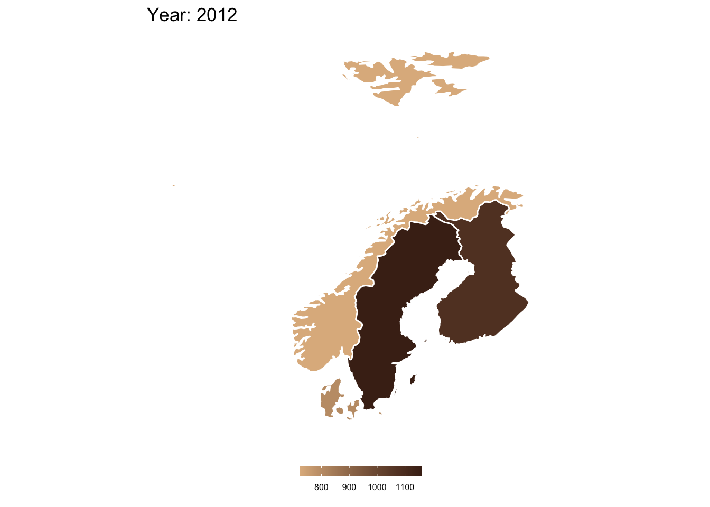
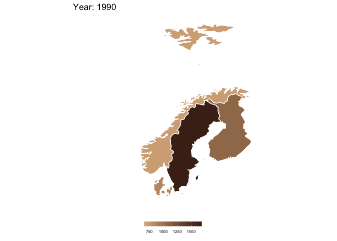

This page gives an example of how to create and plot maps in R and map quantitative data on these maps. For this example, I will be plotting domestic coffee consumption in Scandinavia (Denmark, Finland, Norway, and Sweden) from 1990 to 2012 using data from the International Coffee Organization. Consumption is measured in thousands of 60 kg bags of coffee.
Let’s start by loading some packages.
library(grid) # graphical objects
library(maps) # geographical maps
library(mapdata) # supplement to maps package
library(ggmap) # visualizing spatial data on static maps
library(mapproj) # convert latitude/longitude into projected coordinates
library(cowplot) # ggplot add-on
library(MetBrewer) # color palette
library(tidyverse) # tidy framework
library(gganimate) # animate plots
library(gifski) # save animations as gifs
library(reactable) # nice tablesI will read in the consumption data as df and define a coffee-themed color palette.
df <- read.csv("./data/disappearance.csv")
colors <- c("#DFB78C","#AB6832","#49281A")Now I want to create my map and only plot the countries I’m interested in. Using map_data from the ggplot2 package, I can import a world map. Then, I can filter that world map to include only Finland, Norway, Sweden, and Denmark.
## get world map
world <- map_data('world')
## make a list of Scandinavian countries
scandi_list <- c("Finland","Norway","Sweden","Denmark")
## filter out Scandinavian countries from world map
scandi <- filter(world, region %in% scandi_list)I also want to reshape my coffee data so I can plot it later on. To do this, I need to first transform the data from wide to long format. By printing the first six rows, I can see that I’ve successfully transformed my data frame into long format with a single column for each country (region), year, and amount of coffee consumed (consumption).
## reshape data into long format
df <- pivot_longer(df,
cols = X1990:X2018,
names_to = "Year",
values_to = "Consumption")
df <- filter(df, region %in% scandi_list)
## preview data frame
reactable(head(df), compact = T)Now I need to merge this coffee consumption data with my map information. To do this, I will iterate through all years and match the coffee consumption data with the appropriate country data.
## define a new data frame for my combined map and coffee data
all.years <- data.frame()
## loop through all years
years <- unique(df$Year) # get a list of all unique years
for (i in 1:length(years)) { # loop through the number of years
year <- years[i] # define current year
data <- subset(df, df$Year == year) # subset the coffee data frame
# Match coffee consumption data with map
scandi$coffee_consumption <- data$Consumption[match(scandi$region,data$region)]
# make group and region a factor
scandi$group <- as.factor(scandi$group)
scandi$region <- as.factor(scandi$region)
# save the year information in a new column
scandi$year <- year
# combine all years together
all.years <- rbind(all.years,scandi)
}
## preview new data frame
reactable(head(all.years), compact = T)Great! Now I have my map data combined with my coffee consumption data. But I have a few problems. 1) The year column still has an X in front of each year value. 2) I’m missing data for some of my countries from after 2012.
First, I’ll remove the X in the year column by using the substring function. I’ll also make sure to make year numeric.
## remove the X placeholder at the front of each year value
all.years$year <- substring(all.years$year, 2)
## make year numeric
all.years$year <- as.numeric(all.years$year)For the sake of simplicity, I’ll only include data from 1990 to 2012 in my maps.
all.years <- subset(all.years, all.years$year <= 2012)Now let’s make some maps!
To start, I just want to plot a map that shows how many thousands of 60kg bags of coffee were consumed in each country in 2012.
# subset all.years into just data from 2012
this.year <- subset(all.years, year == 2012)
ggplot(data = this.year) +
labs(title = "Year: 2012") +
geom_polygon(aes(x=long, y=lat, group = group, fill = coffee_consumption),
color = "white", size = 0.5) +
coord_fixed(1.6) +
theme_classic() +
xlab(NULL) + ylab(NULL) +
scale_fill_gradient(name = "", low = colors[1], high = colors[3]) +
theme(legend.position = "bottom",
legend.key.height = unit(0.25, "cm"),
legend.text = element_text(size = 6),
line = element_blank(),
axis.text.x = element_blank(),
axis.text.y = element_blank())
This looks great! But, this only visually tells me about coffee consumption in 2012. What if I want to look at how coffee consumption changes over time?
A fun way to visualize changes over time is to create an animated gif of multiple maps. To do this, I’ll plot the same map as above, with a few changes to the code.
plot <- ggplot(data = all.years) +
transition_manual(year) + labs(title = "Year: {current_frame}") +
geom_polygon(aes(x=long, y=lat, group = group, fill = coffee_consumption),
color = "white", size = 0.5) +
coord_fixed(1.6) +
theme_classic() +
xlab(NULL) + ylab(NULL) +
scale_fill_gradient(name = "", low = colors[1], high = colors[3]) +
theme(legend.position = "bottom",
legend.key.height = unit(0.25, "cm"),
legend.text = element_text(size = 6),
line = element_blank(),
axis.text.x = element_blank(),
axis.text.y = element_blank())
## make into a gif
animate(plot, duration = 10, fps = 20, renderer = gifski_renderer())